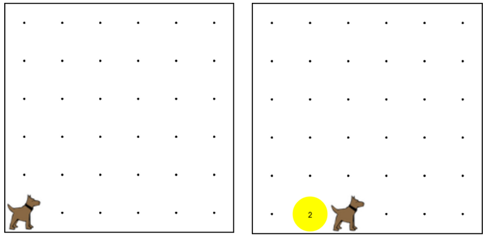

Write a program to have Karel create a short stack of tennis balls.
Karel should move one spot, put down two tennis balls, and then move again.
寫一個程式讓卡羅爾創造一個網球堆。卡羅爾應移動至另一個點，放下兩個網球，然後再次移動。

move(); 移動();
turnLeft(); 左轉();
putBall(); 放球();
takeBall(); 拿球();